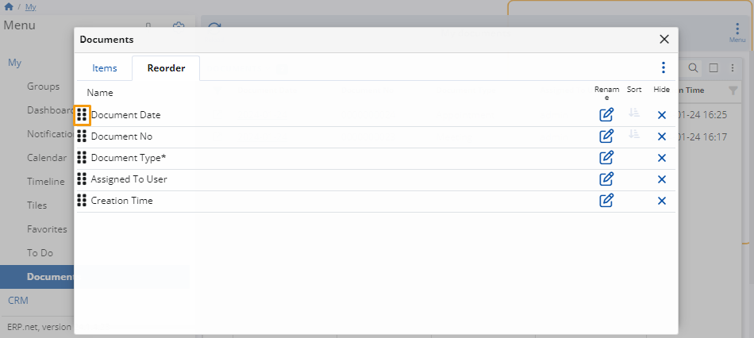
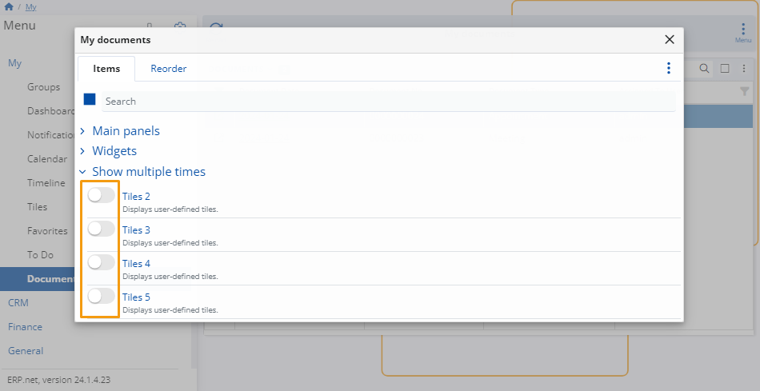

Documents
My Documents is an application dedicated to organizing all documents in ERP.net which you are somehow involved with.
These could be the ones you created and assigned to yourself, along with those which your colleagues created and assigned to you afterwards.
Apart from offering instant access to each document, the application gives you various ways of customizing how they are displayed.

You no longer need to search across different modules and dozens of system navigators in order to find the document that you need.
In My Documents, they are all conveniently unified in one place.
Important prerequisites
Upon creation, all ERP.net documents have an Assigned To User field that determines the person whose personalized environment they appear in.
By default, new documents are automatically assigned to the person creating them (e.g. you). You also have the option to assign them to someone else.

Note
1. Currently, you always provide the login of the user (as defined in Setup -> Security -> Users), and not their actual name.
2. If the Assigned To User field is not visible, you need to reveal it manually by customizing the document creation panel. This will enable you to change the person the document is assigned to.
3. Once a user is specified and the document is saved, it will appear in the user's respective My Documents environment.
Features
You can take advantage of various buttons, fields, customization features, and menus to better navigate and organize your documents.
Documents table
At the very center of My Documents is a table presenting all the documents which are somehow related to your account.
You can not only preview, but also interact with this table, starting from simple operations, such as filtering, sorting, and accessing your documents.
The app also empowers users to go to more advanced options like grouping documents by column headers and displaying summarized data about the documents.

Search
The search bar above the table is intended to help you find a specific document.
Simply provide a detail related to it, like its number, date, or the type of document you are looking for - a meeting, appointment, offer, sales order, etc.
The search will return a list of all the documents that contain the detail you searched for.

Actions menu
You can click the vertical three-dot button to expand a menu containing a list of actions.
It allows you to perform a wide variety of operations, such as reloading your records, exporting the table with its data, and even grouping your documents by one or more parameters.

Show grouping panel
You can use the Show grouping panel feature to arrange your documents in groups based on a certain parameter, visualized by its respective column header.
For instance, you may want to separate the full list of your existing documents into several groups. These groups could organize documents by their type, their state, the month they were created on, and so on.

To begin, click on Show grouping panel, then drag and drop a column header right into the field (the space) that appeared above the table.
Once you do that, the documents will be arranged in groups based on that column (e.g. Document Type).
Documents having the same value in the column header you grouped by will appear under the same group.

You can also group your documents in a multi-level, hierarchical order by providing multiple column headers.
In that case, the documents will be further categorized in groups based on the column that goes first, followed by the rest of the grouped columns in a consecutive order.
By adding more groups, you configure the table to visualize the documents in a more structured and navigation friendly way.
For example, let's say you add a Document Type column header first, then a Document Date column header second:
- Two levels of groups will show up.
- The first-level groups will indicate what type of documents each of them contains - for example, activities, offers, sales orders, etc.
- While the second-level groups will further narrow the range of documents down to the date they were issued on - for example, only the offers issued for a specific year, month, or date.
Tip
You can gain insight into your data from different points of view by changing what column headers you group or even just by switching their order.
Panel customization
Like most My apps, the Documents application can be freely customized to your preferences.
Simply go to the band with the "Documents" title at the top of the table panel and click the Customize panel option from the three-dot actions menu. This will open a window with two tabs:
Items
You can hide or reveal columns in the documents table from the System section of this tab.
Toggle the slider button next to the desired column to trigger the respective action.
Reorder
You can change the order of the table column headers to better fit your preferences.
Drag them up and down until they form the desired sequence.

Note
You can also reorder your columns by dragging and dropping them horizontally across the table itself.
Menu
There's an additional Menu button in the ribbon that allows you to interact with the entire My Documents application.
You can take advantage of more global features, such as opening side panels, adding widgets, creating different tiles, and showing them multiple times.
Side panels
These can provide invaluable information for each of your documents, as well as allow you to apply additional filters to the table.
For instance, you can show the Details panel to view additional information about each of your documents.
This enables you to preview the document's data in a fast and easy way, without even having to open the document's form.
Tip
The Details panel will visualize the data of a document as soon as you select its row.
You can rapidly preview the data of a number of documents - simply switch between the rows of the primary table when ready.

Oftentimes, a document is issued as part of a sequence of documents, called a document chain.
Having the Document flow panel at your disposal gives you an easy way to traverse the whole document chain and quickly access all documents related to the current one.
If a document is released as part of other documents, the entire chain will show up here.

Tiles
You can save a specific configuration of the My documents page and create a tile for it.
In case you have set a combination of filters, the tile will store them as well.
Whenever you visit your personalized Tiles environment, the respective Documents tile will be available to access directly from there.

Customize form
Last but not least, you can customize the look and feel of your Documents application.
Simply select Customize form from the Menu button's dropdown.

A window with two tabs will open:
Items
Here, you can hide or reveal certain panels, widgets, and items from the main page.
Toggle their sliders off or on, respectively, to achieve the desired action.
It is here that you can also include additional widget panels dedicated to your favorite documents, document-related tiles, and different web views.
You can include up to five tile panels in your Documents application.
This allows you to have readily available configurations which can alter the appearance of the page when clicked, based on the filters and grouping configurations applied.

Reorder
You can change the order of the items on the page by dragging them up and down until they form the desired layout.

Use the Position option to determine how each of the item panels you want to visualize.
You can select between a Fill, Left, or Right position to neatly order your panels and make the best use of your screen space.